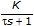
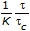
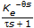
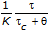
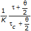
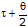
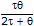

is the plant delay.
is the plant delay.Internal model control (IMC) is a control technique that uses an internal model to try to estimate the system response. PID and Fuzzy Logic VIs use IMC when it cannot successfully implement the Ziegler-Nichols method, such as when a model has no delay. You also can use the PID Autotuning Design VI to directly implement this autotuning method.
This method assumes a first-order model with delay. If your system is not a first-order model, these techniques try to approximate one during tuning.
The following table shows the tuning formula for the internal model control technique, where K is the model gain, is the plant time constant, c is the desired time constant, and is the plant delay.
| Controller | Model | Kc | Ti | Td |
|---|---|---|---|---|
| PI (delay-free) |  |  | � | |
| PI + Plant (with delay) |  |  | � | |
| PID |  |  |  |
This method is based on algorithms and techniques described in reference material by Seborg, Dale E., Thomas F. Edgar, and Duncan A. Mellichamp. For more information about this method, refer to the reference material by those authors.